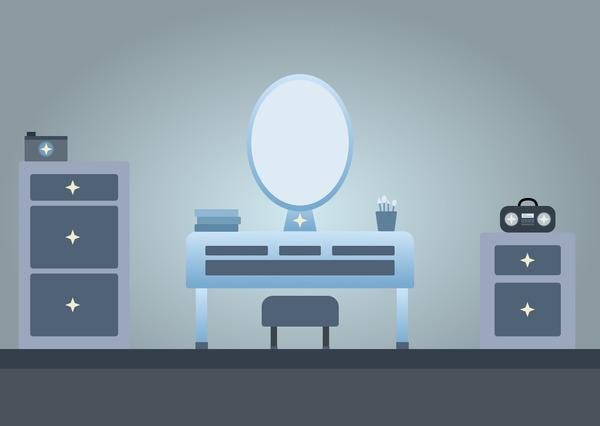
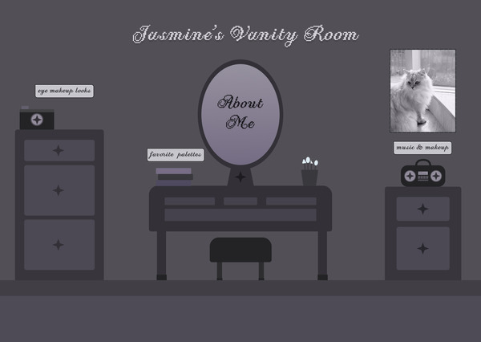

Conceptual Changes

Old Room Concept
Initially I was going for a blue vanity scene but after revising it, this was a personal choice I ended up towards moving to a different color scheme. The reason I let go of the blue color scheme was mainly because I no longer liked it and it did not stand out to me visually. I am now steering towards a darker aesthetic for my vanity design.
Design Revisions

New Room Concept
Featured is my new design concept which is a darker aesthetic, in terms of interaction I was advised from my peers to explore the image map. Initially, the interactivity I had revolved around scrolling to different sections on a page. So for example if someone clicked on makeup & music, then there would be an automatic scroll to a section that explored makeup and music. A key point of feedback that I received was that it may be an overload of information. To combat this they mentioned that holding all the interactivity within one section would enhance the user experience and allow for a more seamless discovery as they hover over the 4 different interactive sections.
Interaction Changes
I'm going to be exploring with Image Maps, I plan to use an image map to highlight e hotspots on the page for the user to interact with. The three spots are labeled as makeup & music, favorite palettes, eyemakeup looks, and the about me section. Lastly a fun a secret interaction would be hovering over the empty picture frame and display an image of a fancy cat as a result. Now steering in this new direction I want to create a small space that is interactive for the user by providing the user with quick facts about my journey as a creative in makeup.
Concerns & Questions
The implementation of the interactions I hope to have after an individual hovers over each section is what worries me. Shortening the content I initially intended to provide while also providing enough information that gets my point across throughout this page. I'll list a few questions below that are weighing on my mind slightly, but I have not yet implemented any changes yet as I am still in the early stages of building the project in CSS/JS.
- How will I implement a hover that allows me to use a slideshow within it?
- How big generally should hovers/popups be in size that does not overwhelm the user?